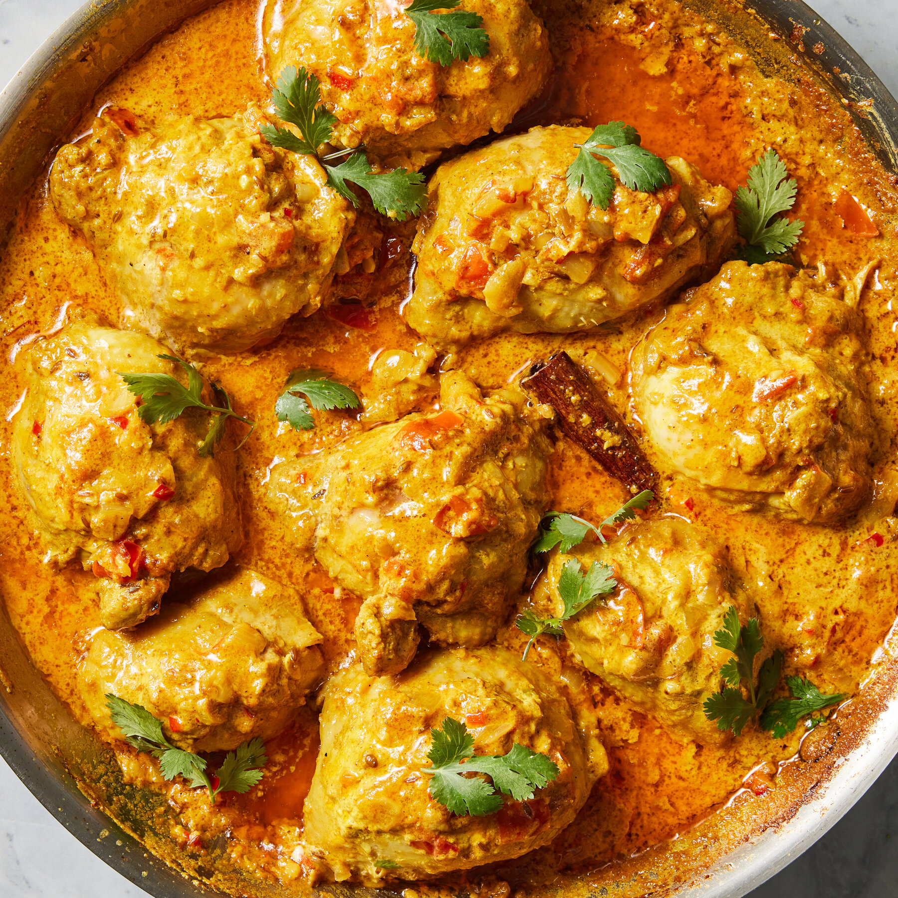

Back to home
Butter Chicken

Also called Murgh Makhani, Butter Chicken is a legendary North Indian dish developed in Delhi’s Moti Mahal restaurant. Its hallmark is the creamy tomato-based sauce, enriched with butter and cream. Mildly spiced, it remains one of India’s most famous culinary exports and reflects Mughlai influences.
Ingredients:
- 500g boneless chicken thighs or breasts, cut into chunks
- 1 cup plain yogurt
- 2 tbsp lemon juice
- 2 tsp garam masala
- 1 tsp turmeric powder
- 1 tsp chili powder
- 1 tsp ground cumin
- 1 tsp ground coriander
- 1 tsp salt
- 2 tbsp vegetable oil
- 1 large onion, finely chopped
- 1 tbsp ginger-garlic paste
- 400g canned tomato puree
- 1/2 cup water
- 2 tbsp butter
- 1/2 cup heavy cream
- 2 tbsp sugar
- 1/2 tsp fenugreek leaves (kasuri methi)
- Fresh coriander for garnish
Instructions:
- Marinate chicken with yogurt, lemon juice, and half the spices and salt. Refrigerate 1-2 hours.
- In a large pan, sauté onion until golden. Add ginger-garlic paste; cook briefly.
- Add tomato puree, remaining spices, and water. Simmer 10 minutes until thick.
- Add marinated chicken; cook through, stirring often.
- Stir in butter, cream, sugar, and fenugreek leaves. Simmer 5 minutes. Adjust seasonings.
- Garnish with coriander and serve hot with naan or rice.